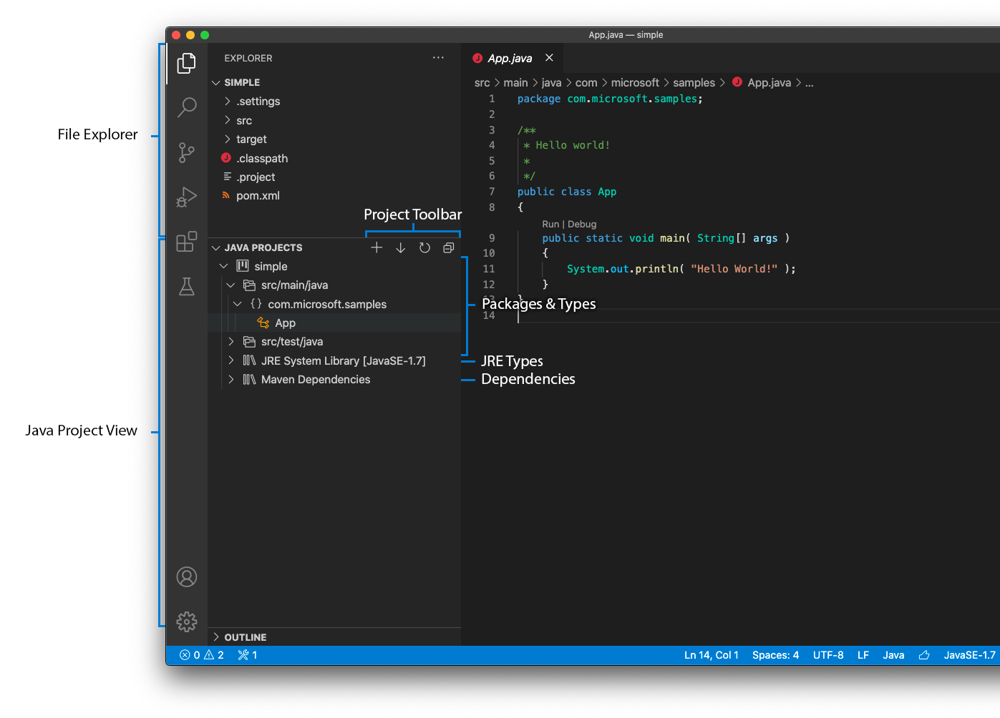
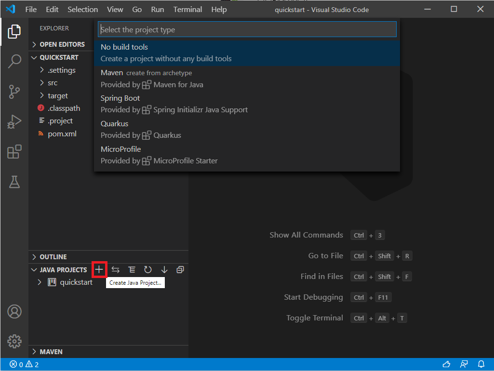
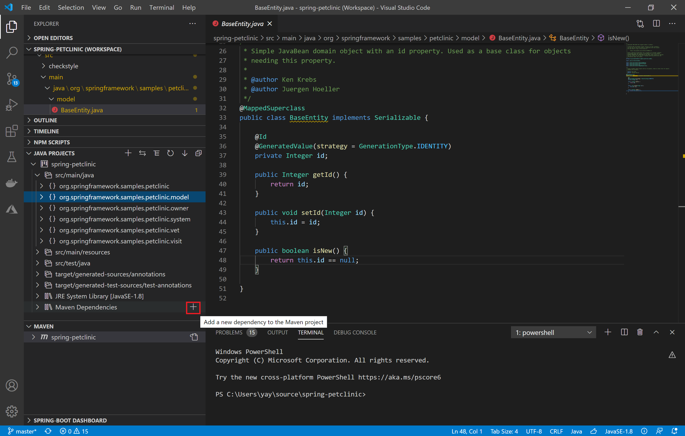
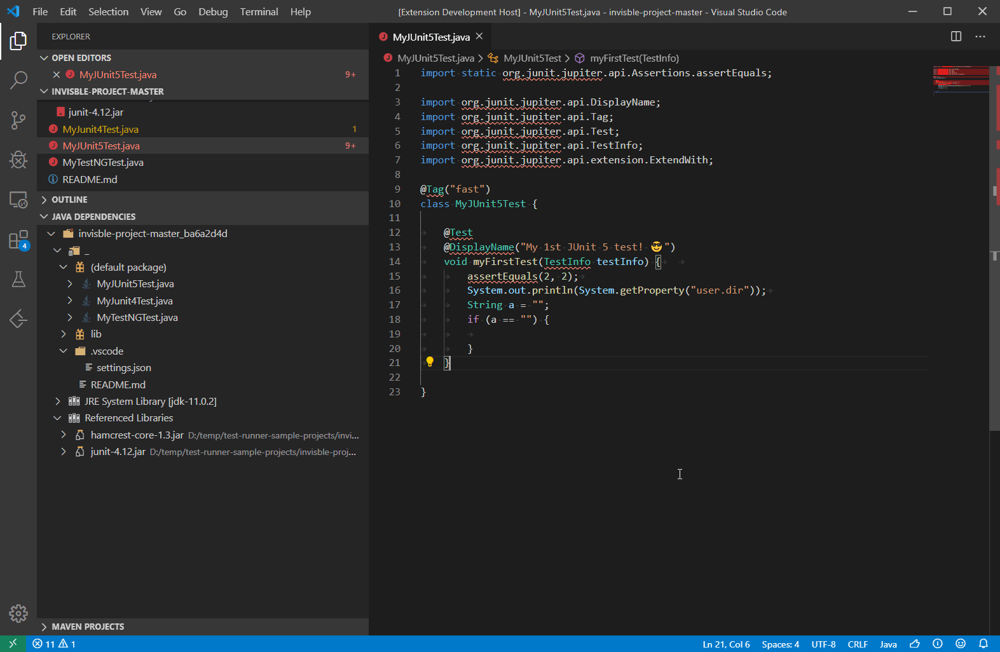
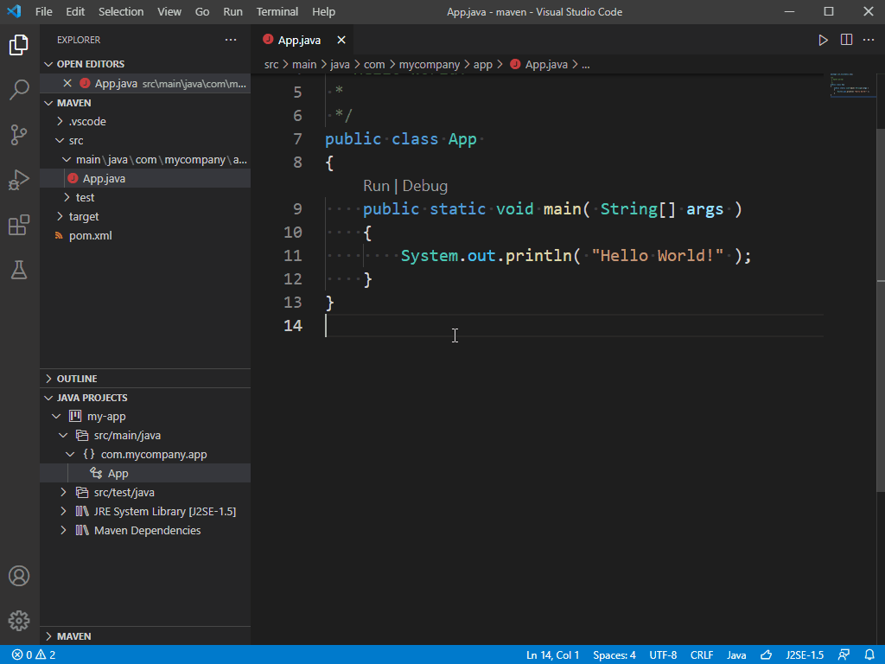
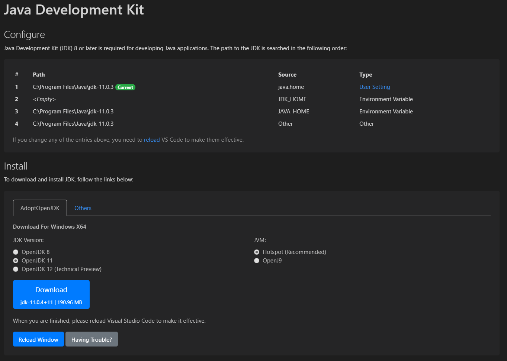
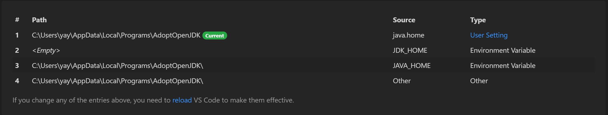
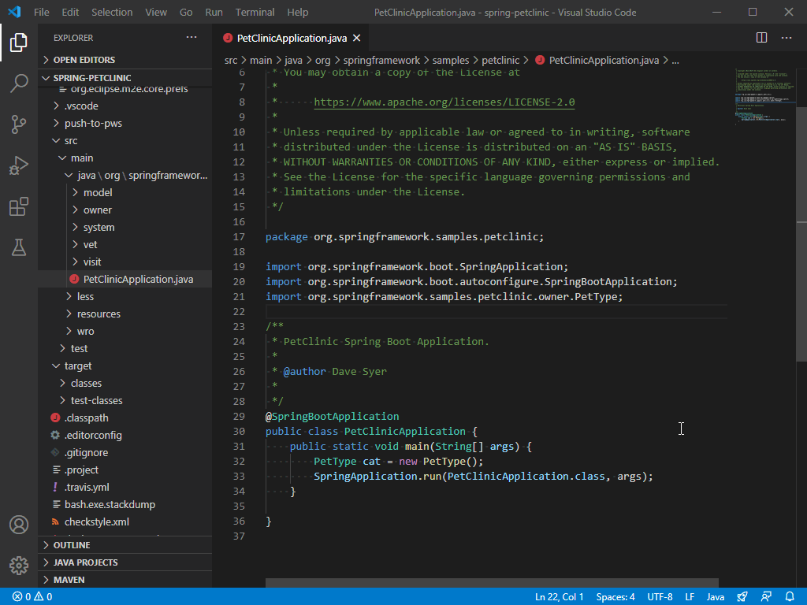

Java project management in VS Code
This document will give you an overview of how to manage your Java project in Visual Studio Code.
If you run into any issues when using the features below, you can contact us by clicking the Report an issue button below.
Project management
Managing a project in VS Code requires the Project Manager for Java extension. The extension helps manage class paths and dependencies, and create new projects, packages, and classes.
Install the Project Manager for Java
Project view
Project view helps you view your project and its dependencies, and provides entry points for project management tasks. You can switch between a hierarchy view and flat view.

Create a project
You can create a project or source only workload by clicking the + sign on project view, or through the command: Java: Create Java Project.... During creation, VS Code will facilitate installing required extension(s) per your project type, if the extension(s) weren't installed.

Import a project or module
A project or module is imported to a workspace through File > Open Folder or File > Open Workspace menu. VS Code for Java will detect your project type automatically. As a tip, you can run the command Java: Import Java projects in workspace to reimport a project and alert the language server that there were changes to the project, without reloading your window.
Add a dependency
For Maven project, you can add a dependency by clicking the + sign next to Maven Dependencies node in project view.

Add a JAR
JAR file(s) can be added by clicking the + sign next to Referenced Libraries node in project view.

For more details on library, refer to Library Configuration.
Export to JAR
You can export your build to JAR from the project view or by running the command Java: Export Jar....

Configure JDK
As Java evolves, it's common that developers work with multiple versions of JDK. To correctly configure your environment and project, you have to know two configurations, java.configuration.runtimes and java.home. The former specifies options for your project's execution environment; the latter specifies your language server's execution environment.
Note: Although the Java language server requires JDK version 11 or above to run, this is NOT a requirement to your project's runtime.
The easiest way for you to configure the JDK is to use the Java Runtime Configuration wizard. You can launch the wizard by opening the Command Palette (kb(workbench.action.showCommands)) and typing the command Java: Configure Java Runtime, which will bring up the configuration user interface shown below.

If you want to configure without the wizard, please refer below for details.
JDK for projects
VS Code will detect the runtime required for your project and choose the appropriate configuration from java.configuration.runtimes.
"java.configuration.runtimes": [
{
"name": "JavaSE-1.8",
"path": "/usr/local/jdk1.8.0_201"
},
{
"name": "JavaSE-11",
"path": "/usr/local/jdk-11.0.3",
"sources" : "/usr/local/jdk-11.0.3/lib/src.zip",
"javadoc" : "https://docs.oracle.com/en/java/javase/11/docs/api",
"default": true
},
{
"name": "JavaSE-12",
"path": "/usr/local/jdk-12.0.2"
},
{
"name": "JavaSE-13",
"path": "/usr/local/jdk-13"
}
]
Runtime names must be one of: "J2SE-1.5", "JavaSE-1.6", "JavaSE-1.7", "JavaSE-1.8", "JavaSE-9", "JavaSE-10", "JavaSE-11", "JavaSE-12", "JavaSE-13", "JavaSE-14", "JavaSE-15". We will update the list with each supported release of the JDK.
Note: To enable Java preview features, see How can I use VS Code with new Java versions.
JDK for source only
If you only work with source files and don't use a build tool, VS Code will apply an appropriate runtime using the default configuration of java.configuration.runtimes. If a default isn't specified, VS Code will use the runtime used by the language server, which is determined by the order shown below:

Library configuration
Behind the scene, there's a setting java.project.referencedLibaries in settings.json. Below are details on how to customize this setting.
Include libraries
The libraries to reference are described using a set of glob patterns.
For example:
"java.project.referencedLibraries": [
"library/**/*.jar",
"/home/username/lib/foo.jar"
]
The settings above will add all .jar files in workspace's library folder along with foo.jar from a specified absolute path to the project's external dependencies.
The referenced libraries are then watched by VS Code, and the project will be refreshed if there is a change to any of these dependent files.
By default, VS Code will reference all JAR files in workspace's lib directory using the glob pattern lib/**/*.jar.
Exclude some libraries
If you want to exclude some libraries from the project, you can expand java.project.referencedLibraries to use include/exclude fields and add an exclude glob pattern:
"java.project.referencedLibraries": {
"include": [
"library/**/*.jar",
"/home/username/lib/foo.jar"
],
"exclude": [
"library/sources/**"
]
}
In the example above, any binary JAR files in the library/sources folder are ignored as the project's external dependencies.
Attach source jars
By default, a referenced {binary}.jar will try to search {binary}-sources.jar under the same directory, and attach it as source if one match is found.
If you want to manually specify a JAR file as a source attachment, you can provide a key-value map in the sources field:
"java.project.referencedLibraries": {
"include": [
"library/**/*.jar",
"/home/username/lib/foo.jar"
],
"exclude": [
"library/sources/**"
],
"sources": {
"library/bar.jar": "library/sources/bar-src.jar"
}
}
In this way, bar-src.jar is attached to bar.jar as its source.
In case VS Code throws an error for a classpath issue, try setting your classpath manually by either setting the CLASSPATH environment variable or editing the .classpath file with the path to the JAR file:
<classpathentry kind="lib" path="lib/log4j.jar"/>
In some rare cases, you may need to clean the Java workspace by executing the Java: Clean Java Language Server Workspace command from the Command Palette (kb(workbench.action.showCommands)) to let the language server rebuild your dependencies.
Lightweight Mode
VS Code for Java supports two modes, lightweight and standard. With lightweight mode, only source files and JDK are resolved by the language server; with standard mode, imported dependencies are resolved and the project is built by the language server. Lightweight mode works best when you need a super quick-to-start and lightweight environment to work with your source files, for example, reading source code, navigating among source code and JDK, viewing outline and Javadoc, and detecting and fixing syntax errors. Also, code completion is supported within the scope of source files and JDK.
Lightweight mode doesn't resolve imported dependencies nor build the project, so it does not support running, debugging, refactoring, linting, or detecting semantic errors. For these features to be available, you need to switch your workspace from lightweight mode to standard mode.
You can control which mode to launch with by configuring java.server.launchMode with the options below:
Hybrid(default) - Firstly, a workspace is opened with lightweight mode. You will be asked whether to switch to standard mode if your workspace contains unresolved Java projects. If you choose Later, it will stay in lightweight mode. You can click the server mode icon on the Status bar to manually switch to standard mode.Standard- A workspace is opened with standard mode.LightWeight- A workspace is opened with lightweight mode. You can click the server mode icon on the Status bar to manually switch to standard mode.
The Status bar indicates which mode the current workspace is in using different icons.
- - workspace opened with lightweight mode.
- - workspace in the process of being opened with standard mode.
- - workspace opened with standard mode.
Clicking the lightweight mode icon switches to standard mode.

Build Status
When you edit Java source code in Visual Studio Code, the Java language server is building your workspace to provide you with the necessary language features. You can see the detailed build task status and watch what is happening behind the scene by clicking the language server Status bar icon in the lower right.
Additional resources
Visit the GitHub Repo of the Maven extension for additional configurations and a troubleshooting guide.
In addition to Maven, there's also a Bazel extension if you use Bazel to build and test your project.
Next steps
Read on to find out more about:
- Java Editing - Explore the editing features for Java in VS Code.
- Java Debugging - Find out how to debug your Java project with VS Code.
- Java Testing - Use VS Code for your JUnit and TestNG cases.
- Java Extensions - Learn about more useful Java extensions for VS Code.